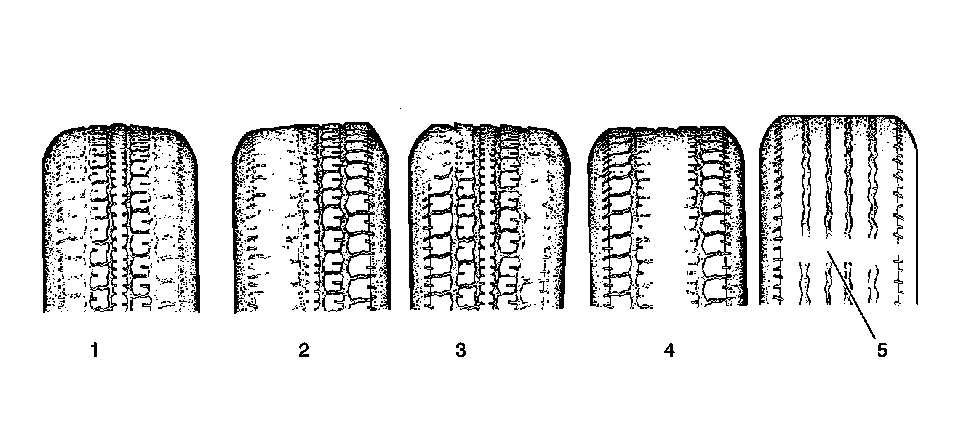

Tire Diagnosis - Irregular or Premature Wear
Tire Diagnosis - Irregular or Premature Wear
Tire Wear
Tire Wear:

1 - Under-Inflation, Hard Cornering, Lack of Regular Rotation
2 - Incorrect Wheel Alignment, Hard Cornering, Lack of Regular Rotation
3 - Incorrect Wheel Alignment
4 - Over-Inflation, Heavy Acceleration, Lack of Regular Rotation
5 - Normal Wear to the Wear Indicator
Inspection Procedure
1. Inspect the front tire wear.
2. Inspect the rear tire wear.
3. Rotate the tires if any of the following conditions exist:
* The amount of time or mileage since the last tire rotation matches the maintenance schedule.
* The outer tread blocks are worn more than the middle tread blocks (1).
* The outer tread blocks are worn more than the inner tread blocks (2).
* The middle tread blocks are worn more than the outer tread blocks (4).
4. Measure the wheel alignment if any of the following conditions exist:
* The tread blocks have feathered edges (3).
* The outer tread blocks are worn more than the inner tread blocks (2).
* The inner tread blocks are worn more than the outer tread blocks (2).
5. Inspect the struts or the shock absorbers if the tire tread exhibits a cupped appearance (3).